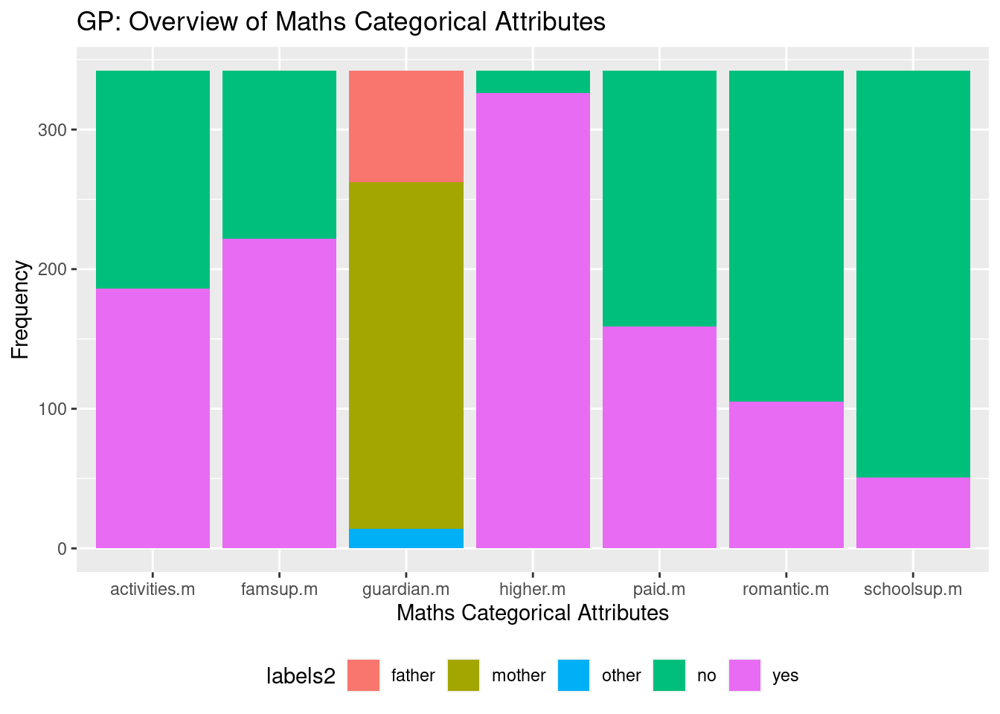

3. Data Description
We installed, where applicable, then import our R libraries. We then imported our csv file dataset as a dataframe called grades
Data Cleaning: Fixing Data Types
Below we see that our data consists of 23 characters and 28 integers, we will convert the characters to factors. For integers we will leave them the way they are. R uses the numeric data type as a default, this means a variable could contain a 1 or a 1.0 decimal place. By specifying that the variables are integers R is saying it will treat them as whole numbers. The reason we are doing all this is to avail of R’s functionality for manipulating variables. Factors have more categorical options and features than characters, which are, to R just strings of text.
## school sex age address famsize Pstatus
## "character" "character" "integer" "character" "character" "character"
## Medu Fedu Mjob Fjob reason nursery
## "integer" "integer" "character" "character" "character" "character"
## internet guardian.m traveltime.m studytime.m failures.m schoolsup.m
## "character" "character" "integer" "integer" "integer" "character"
## famsup.m paid.m activities.m higher.m romantic.m famrel.m
## "character" "character" "character" "character" "character" "integer"
## freetime.m goout.m Dalc.m Walc.m health.m absences.m
## "integer" "integer" "integer" "integer" "integer" "integer"
## mG1 mG2 mG3 guardian.p traveltime.p studytime.p
## "integer" "integer" "integer" "character" "integer" "integer"
## failures.p schoolsup.p famsup.p paid.p activities.p higher.p
## "integer" "character" "character" "character" "character" "character"
## romantic.p famrel.p freetime.p goout.p Dalc.p Walc.p
## "character" "integer" "integer" "integer" "integer" "integer"
## health.p absences.p pG1 pG2 pG3
## "integer" "integer" "integer" "integer" "integer"We will loop through our columns and convert character columns into factors. When we are finished we will check our result to ensure it worked.
## school sex age address famsize Pstatus
## "factor" "factor" "integer" "factor" "factor" "factor"
## Medu Fedu Mjob Fjob reason nursery
## "integer" "integer" "factor" "factor" "factor" "factor"
## internet guardian.m traveltime.m studytime.m failures.m schoolsup.m
## "factor" "factor" "integer" "integer" "integer" "factor"
## famsup.m paid.m activities.m higher.m romantic.m famrel.m
## "factor" "factor" "factor" "factor" "factor" "integer"
## freetime.m goout.m Dalc.m Walc.m health.m absences.m
## "integer" "integer" "integer" "integer" "integer" "integer"
## mG1 mG2 mG3 guardian.p traveltime.p studytime.p
## "integer" "integer" "integer" "factor" "integer" "integer"
## failures.p schoolsup.p famsup.p paid.p activities.p higher.p
## "integer" "factor" "factor" "factor" "factor" "factor"
## romantic.p famrel.p freetime.p goout.p Dalc.p Walc.p
## "factor" "integer" "integer" "integer" "integer" "integer"
## health.p absences.p pG1 pG2 pG3
## "integer" "integer" "integer" "integer" "integer"Data Cleaning: Data Subsetting
We want to create a summary table to examine our data but we have too many attributes so we will split our dataset up and examine the groups. The idea here is that we will test each group of variables against our grades to see which ones we will keep for our predictive model.
Gabriel Pereira (GP) & Mousinho da Silveira (MS)
Our dataset relates to a survey carried out in two different schools. There is 88% less observations in Mousinho da Silveira (MS) school (40 observations) vs Gabriel Pereira (GP) school (342).
## [1] 382 53## GP MS
## 342 40As mentioned previously in Part 2 Data Collection & Preparation, we wanted a summary table to examine our data but we had too many attributes so we split our dataset up into groups for examination. These groups again were:
- General Student Information,
- Maths Student Information,
- Portuguese Language Student Information,
Using the Summary function in R we examine students of Gabriel Pereira (GP) school and Mousinho da Silveira (MS) school. To understand outliers with our data we calculated the skew and kurtosis. Finally to visualise these two tables we create a bar plot of all our categorical variables then histograms, QQ plots and grouped boxplot of our numeric variables.
Gabriel Pereira (GP): All Students
Now we examine our students from GP school
## sex age address famsize Pstatus Medu
## F:175 Min. :15.00 R: 59 GT3:250 A: 37 Min. :0.000
## M:167 1st Qu.:16.00 U:283 LE3: 92 T:305 1st Qu.:2.000
## Median :16.00 Median :3.000
## Mean :16.44 Mean :2.854
## 3rd Qu.:17.00 3rd Qu.:4.000
## Max. :22.00 Max. :4.000
## Fedu Mjob Fjob reason nursery
## Min. :0.000 at_home : 45 at_home : 13 course :123 no : 61
## 1st Qu.:2.000 health : 32 health : 17 home :100 yes:281
## Median :3.000 other :120 other :193 other : 26
## Mean :2.594 services: 89 services: 90 reputation: 93
## 3rd Qu.:4.000 teacher : 56 teacher : 29
## Max. :4.000
## internet
## no : 48
## yes:294
##
##
##
## We generate GP Student Descriptive Statistics such as mean, variance and standard deviation. We also see what percentage are greater than a standard deviation of 1.96 and 3.29.
## [1] "GP Student Age Descriptive Statistics"## median mean SE.mean CI.mean.0.95 var std.dev
## 16.00000000 16.44444444 0.06173316 0.12142574 1.30335614 1.14164624
## coef.var
## 0.06942443## [1] "% values with z-score > 1.96"## [1] 2.631579## [1] "% values with z-score > 3.29"## [1] 0.2923977## [1] "GP Student Mother's Education Descriptive Statistics"## median mean SE.mean CI.mean.0.95 var std.dev
## 3.00000000 2.85380117 0.05743349 0.11296853 1.12812334 1.06213151
## coef.var
## 0.37218133## [1] "% values with z-score > 1.96"## [1] 0.877193## [1] "% values with z-score > 3.29"## [1] 0## [1] "GP Student Father's Education Descriptive Statistics"## median mean SE.mean CI.mean.0.95 var std.dev
## 3.00000000 2.59356725 0.05889415 0.11584156 1.18623416 1.08914377
## coef.var
## 0.41994044## [1] "% values with z-score > 1.96"## [1] 0.5847953## [1] "% values with z-score > 3.29"## [1] 0To understand outliers with our student data we calculate the skew and kurtosis
To visualise these two tables we create a bar plot of all our categorical variables then histograms, QQ plots and grouped boxplot of our numeric variables. 
We repeat the same process for the rest of the school, then we do the same for MS school.
Gabriel Pereira (GP): Maths Students
## guardian.m traveltime.m studytime.m failures.m schoolsup.m
## father: 80 Min. :1.000 Min. :1.000 Min. :0.0000 no :291
## mother:248 1st Qu.:1.000 1st Qu.:1.000 1st Qu.:0.0000 yes: 51
## other : 14 Median :1.000 Median :2.000 Median :0.0000
## Mean :1.383 Mean :2.058 Mean :0.2895
## 3rd Qu.:2.000 3rd Qu.:2.000 3rd Qu.:0.0000
## Max. :4.000 Max. :4.000 Max. :3.0000
## famsup.m paid.m activities.m higher.m romantic.m famrel.m
## no :120 no :183 no :156 no : 16 no :237 Min. :1.000
## yes:222 yes:159 yes:186 yes:326 yes:105 1st Qu.:4.000
## Median :4.000
## Mean :3.968
## 3rd Qu.:5.000
## Max. :5.000
## freetime.m goout.m Dalc.m Walc.m health.m
## Min. :1.000 Min. :1.000 Min. :1.00 Min. :1.000 Min. :1.000
## 1st Qu.:3.000 1st Qu.:2.000 1st Qu.:1.00 1st Qu.:1.000 1st Qu.:3.000
## Median :3.000 Median :3.000 Median :1.00 Median :2.000 Median :4.000
## Mean :3.222 Mean :3.123 Mean :1.45 Mean :2.263 Mean :3.608
## 3rd Qu.:4.000 3rd Qu.:4.000 3rd Qu.:2.00 3rd Qu.:3.000 3rd Qu.:5.000
## Max. :5.000 Max. :5.000 Max. :5.00 Max. :5.000 Max. :5.000
## absences.m mG1 mG2 mG3
## Min. : 0.00 Min. : 3.0 Min. : 0.00 Min. : 0.00
## 1st Qu.: 0.00 1st Qu.: 8.0 1st Qu.: 9.00 1st Qu.: 8.00
## Median : 4.00 Median :10.5 Median :11.00 Median :11.00
## Mean : 5.52 Mean :10.9 Mean :10.79 Mean :10.49
## 3rd Qu.: 8.00 3rd Qu.:13.0 3rd Qu.:13.00 3rd Qu.:14.00
## Max. :75.00 Max. :19.0 Max. :19.00 Max. :20.00## [1] "GP Math traveltime.m Descriptive Statistics"## median mean SE.mean CI.mean.0.95 var std.dev
## 1.00000000 1.38304094 0.03596181 0.07073491 0.44229219 0.66505052
## coef.var
## 0.48086105## [1] 6.140351## [1] 2.046784## [1] "GP Student studytime.m Descriptive Statistics"## median mean SE.mean CI.mean.0.95 var std.dev
## 2.00000000 2.05847953 0.04637670 0.09122043 0.73557305 0.85765555
## coef.var
## 0.41664517## [1] 7.894737## [1] 0## [1] "GP Math failures.m Descriptive Statistics"## median mean SE.mean CI.mean.0.95 var std.dev
## 0.00000000 0.28947368 0.04018680 0.07904524 0.55232289 0.74318429
## coef.var
## 2.56736391## [1] 7.894737## [1] 4.678363## [1] "GP Math famrel.m Descriptive Statistics"## median mean SE.mean CI.mean.0.95 var std.dev
## 4.00000000 3.96783626 0.04799545 0.09440443 0.78781876 0.88759155
## coef.var
## 0.22369662## [1] 6.140351## [1] 1.754386## [1] "GP Math freetime.m Descriptive Statistics"## median mean SE.mean CI.mean.0.95 var std.dev
## 3.00000000 3.22222222 0.05263634 0.10353280 0.94753992 0.97341662
## coef.var
## 0.30209481## [1] 4.385965## [1] 0## [1] "GP Math goout.m Descriptive Statistics"## median mean SE.mean CI.mean.0.95 var std.dev
## 3.0000000 3.1228070 0.0612029 0.1203827 1.2810619 1.1318400
## coef.var
## 0.3624432## [1] 0## [1] 0## [1] "GP Math famrel.m Descriptive Statistics"## median mean SE.mean CI.mean.0.95 var std.dev
## 4.00000000 3.96783626 0.04799545 0.09440443 0.78781876 0.88759155
## coef.var
## 0.22369662## [1] 6.140351## [1] 1.754386## [1] "GP Math Dalc.m Descriptive Statistics"## median mean SE.mean CI.mean.0.95 var std.dev
## 1.00000000 1.45029240 0.04672893 0.09191324 0.74678877 0.86416941
## coef.var
## 0.59585875## [1] 4.093567## [1] 2.339181## [1] "GP Math Walc.m Descriptive Statistics"## median mean SE.mean CI.mean.0.95 var std.dev
## 2.00000000 2.26315789 0.07066251 0.13898927 1.70767094 1.30677884
## coef.var
## 0.57741391## [1] 7.602339## [1] 0## [1] "GP Math health.m Descriptive Statistics"## median mean SE.mean CI.mean.0.95 var std.dev
## 4.00000000 3.60818713 0.07497132 0.14746447 1.92227882 1.38646270
## coef.var
## 0.38425465## [1] 0## [1] 0## [1] "GP Math absences.m Descriptive Statistics"## median mean SE.mean CI.mean.0.95 var std.dev
## 4.0000000 5.5204678 0.4269376 0.8397628 62.3382895 7.8954601
## coef.var
## 1.4302158## [1] 3.80117## [1] 0.877193## [1] "GP Math mG1 Descriptive Statistics"## median mean SE.mean CI.mean.0.95 var std.dev
## 10.5000000 10.8976608 0.1804488 0.3549329 11.1361235 3.3370831
## coef.var
## 0.3062201## [1] 3.216374## [1] 0## [1] "GP Math mG2 Descriptive Statistics"## median mean SE.mean CI.mean.0.95 var std.dev
## 11.0000000 10.7894737 0.2087265 0.4105536 14.8998302 3.8600298
## coef.var
## 0.3577589## [1] 4.678363## [1] 0## [1] "GP Math mG3 Descriptive Statistics"## median mean SE.mean CI.mean.0.95 var std.dev
## 11.0000000 10.4941520 0.2533494 0.4983243 21.9515786 4.6852512
## coef.var
## 0.4464631## [1] 10.23392## [1] 0

Gabriel Pereira (GP): Portuguese Language Students
## guardian.p traveltime.p studytime.p failures.p schoolsup.p
## father: 80 Min. :1.000 Min. :1.000 Min. :0.0000 no :292
## mother:248 1st Qu.:1.000 1st Qu.:1.000 1st Qu.:0.0000 yes: 50
## other : 14 Median :1.000 Median :2.000 Median :0.0000
## Mean :1.383 Mean :2.064 Mean :0.1287
## 3rd Qu.:2.000 3rd Qu.:2.000 3rd Qu.:0.0000
## Max. :4.000 Max. :4.000 Max. :3.0000
## famsup.p paid.p activities.p higher.p romantic.p famrel.p
## no :119 no :320 no :157 no : 16 no :236 Min. :1.000
## yes:223 yes: 22 yes:185 yes:326 yes:106 1st Qu.:4.000
## Median :4.000
## Mean :3.965
## 3rd Qu.:5.000
## Max. :5.000
## freetime.p goout.p Dalc.p Walc.p health.p
## Min. :1.000 Min. :1.00 Min. :1.00 Min. :1.000 Min. :1.000
## 1st Qu.:3.000 1st Qu.:2.00 1st Qu.:1.00 1st Qu.:1.000 1st Qu.:3.000
## Median :3.000 Median :3.00 Median :1.00 Median :2.000 Median :4.000
## Mean :3.222 Mean :3.12 Mean :1.45 Mean :2.272 Mean :3.605
## 3rd Qu.:4.000 3rd Qu.:4.00 3rd Qu.:2.00 3rd Qu.:3.000 3rd Qu.:5.000
## Max. :5.000 Max. :5.00 Max. :5.00 Max. :5.000 Max. :5.000
## absences.p pG1 pG2 pG3
## Min. : 0.000 Min. : 0.00 Min. : 7.00 Min. : 0.0
## 1st Qu.: 0.000 1st Qu.:11.00 1st Qu.:11.00 1st Qu.:11.0
## Median : 2.000 Median :12.00 Median :12.00 Median :13.0
## Mean : 3.775 Mean :12.26 Mean :12.34 Mean :12.7
## 3rd Qu.: 6.000 3rd Qu.:14.00 3rd Qu.:14.00 3rd Qu.:14.0
## Max. :32.000 Max. :18.00 Max. :19.00 Max. :19.0## [1] "GP Lang traveltime.p Descriptive Statistics"## median mean SE.mean CI.mean.0.95 var std.dev
## 1.00000000 1.38304094 0.03596181 0.07073491 0.44229219 0.66505052
## coef.var
## 0.48086105## [1] 6.140351## [1] 2.046784## [1] "GP Lang studytime.p Descriptive Statistics"## median mean SE.mean CI.mean.0.95 var std.dev
## 2.00000000 2.06432749 0.04635399 0.09117575 0.73485277 0.85723554
## coef.var
## 0.41526141## [1] 7.894737## [1] 0## [1] "GP Lang failures.p Descriptive Statistics"## median mean SE.mean CI.mean.0.95 var std.dev
## 0.00000000 0.12865497 0.02783222 0.05474445 0.26492429 0.51470796
## coef.var
## 4.00068461## [1] 3.508772## [1] 3.508772## [1] "GP Lang famrel.p Descriptive Statistics"## median mean SE.mean CI.mean.0.95 var std.dev
## 4.00000000 3.96491228 0.04790002 0.09421672 0.78468900 0.88582673
## coef.var
## 0.22341648## [1] 6.140351## [1] 1.754386## [1] "GP Lang freetime.m Descriptive Statistics"## median mean SE.mean CI.mean.0.95 var std.dev
## 3.0000000 3.2222222 0.0527990 0.1038527 0.9534050 0.9764246
## coef.var
## 0.3030283## [1] 4.385965## [1] 0## [1] "GP Lang goout.m Descriptive Statistics"## median mean SE.mean CI.mean.0.95 var std.dev
## 3.00000000 3.11988304 0.06156906 0.12110297 1.29643635 1.13861159
## coef.var
## 0.36495329## [1] 0## [1] 0## [1] "GP Lang famrel.m Descriptive Statistics"## median mean SE.mean CI.mean.0.95 var std.dev
## 4.00000000 3.96491228 0.04790002 0.09421672 0.78468900 0.88582673
## coef.var
## 0.22341648## [1] 6.140351## [1] 1.754386## [1] "GP Lang Dalc.m Descriptive Statistics"## median mean SE.mean CI.mean.0.95 var std.dev
## 1.00000000 1.45029240 0.04672893 0.09191324 0.74678877 0.86416941
## coef.var
## 0.59585875## [1] 4.093567## [1] 2.339181## [1] "GP Lang Walc.m Descriptive Statistics"## median mean SE.mean CI.mean.0.95 var std.dev
## 2.00000000 2.27192982 0.07074708 0.13915562 1.71176107 1.30834287
## coef.var
## 0.57587292## [1] 7.602339## [1] 0## [1] "GP Lang health.m Descriptive Statistics"## median mean SE.mean CI.mean.0.95 var std.dev
## 4.00000000 3.60526316 0.07521188 0.14793765 1.93463497 1.39091156
## coef.var
## 0.38580029## [1] 0## [1] 0## [1] "GP Lang absences.m Descriptive Statistics"## median mean SE.mean CI.mean.0.95 var std.dev
## 2.0000000 3.7748538 0.2751578 0.5412203 25.8934421 5.0885599
## coef.var
## 1.3480151## [1] 7.309941## [1] 1.754386## [1] "GP Lang pG1 Descriptive Statistics"## median mean SE.mean CI.mean.0.95 var std.dev
## 12.0000000 12.2573099 0.1302782 0.2562501 5.8045652 2.4092665
## coef.var
## 0.1965575## [1] 6.140351## [1] 0.2923977## [1] "GP Lang pG2 Descriptive Statistics"## median mean SE.mean CI.mean.0.95 var std.dev
## 12.0000000 12.3362573 0.1272474 0.2502886 5.5376258 2.3532161
## coef.var
## 0.1907561## [1] 6.140351## [1] 0## [1] "GP Lang pG3 Descriptive Statistics"## median mean SE.mean CI.mean.0.95 var std.dev
## 13.0000000 12.6988304 0.1415892 0.2784982 6.8562450 2.6184432
## coef.var
## 0.2061956## [1] 4.97076## [1] 0.5847953Mousinho da Silveira (MS): All Students
## sex age address famsize Pstatus Medu Fedu
## F:23 Min. :17.0 R:22 GT3:28 A: 1 Min. :1.00 Min. :1.000
## M:17 1st Qu.:17.0 U:18 LE3:12 T:39 1st Qu.:1.00 1st Qu.:1.000
## Median :18.0 Median :2.50 Median :2.000
## Mean :17.8 Mean :2.40 Mean :2.325
## 3rd Qu.:18.0 3rd Qu.:3.25 3rd Qu.:3.000
## Max. :19.0 Max. :4.00 Max. :4.000
## Mjob Fjob reason nursery internet
## at_home : 8 at_home : 3 course :17 no :11 no :10
## health : 1 health : 0 home :10 yes:29 yes:30
## other :18 other :18 other : 8
## services: 7 services:17 reputation: 5
## teacher : 6 teacher : 2
## ## [1] "MS Student Age Descriptive Statistics"## median mean SE.mean CI.mean.0.95 var std.dev
## 18.00000000 17.80000000 0.09607689 0.19433386 0.36923077 0.60764362
## coef.var
## 0.03413728## [1] 10## [1] 0## [1] "MS Student Mother's Education Descriptive Statistics"## median mean SE.mean CI.mean.0.95 var std.dev
## 2.5000000 2.4000000 0.1921538 0.3886677 1.4769231 1.2152872
## coef.var
## 0.5063697## [1] 0## [1] 0## [1] "MS Student Father's Education Descriptive Statistics"## median mean SE.mean CI.mean.0.95 var std.dev
## 2.0000000 2.3250000 0.1804109 0.3649154 1.3019231 1.1410184
## coef.var
## 0.4907606## [1] 0## [1] 0Mousinho da Silveira (MS): Maths Students
## guardian.m traveltime.m studytime.m failures.m schoolsup.m famsup.m
## father:11 Min. :1.00 Min. :1.000 Min. :0.00 no :40 no :24
## mother:27 1st Qu.:1.00 1st Qu.:1.000 1st Qu.:0.00 yes: 0 yes:16
## other : 2 Median :2.00 Median :2.000 Median :0.00
## Mean :1.95 Mean :1.825 Mean :0.30
## 3rd Qu.:2.00 3rd Qu.:2.000 3rd Qu.:0.25
## Max. :4.00 Max. :3.000 Max. :3.00
## paid.m activities.m higher.m romantic.m famrel.m freetime.m
## no :22 no :25 no : 2 no :24 Min. :1.00 Min. :1.000
## yes:18 yes:15 yes:38 yes:16 1st Qu.:3.00 1st Qu.:2.750
## Median :4.00 Median :3.000
## Mean :3.70 Mean :3.225
## 3rd Qu.:4.25 3rd Qu.:4.000
## Max. :5.00 Max. :5.000
## goout.m Dalc.m Walc.m health.m
## Min. :1.000 Min. :1.000 Min. :1.000 Min. :1.000
## 1st Qu.:2.000 1st Qu.:1.000 1st Qu.:2.000 1st Qu.:2.000
## Median :3.000 Median :1.000 Median :2.000 Median :3.000
## Mean :3.025 Mean :1.675 Mean :2.425 Mean :3.325
## 3rd Qu.:4.000 3rd Qu.:2.000 3rd Qu.:3.000 3rd Qu.:5.000
## Max. :5.000 Max. :5.000 Max. :5.000 Max. :5.000
## absences.m mG1 mG2 mG3
## Min. : 0.00 Min. : 6.00 Min. : 5.00 Min. : 0.000
## 1st Qu.: 0.00 1st Qu.: 7.75 1st Qu.: 7.00 1st Qu.: 8.000
## Median : 2.00 Median :10.50 Median :10.00 Median :10.000
## Mean : 3.60 Mean :10.55 Mean :10.05 Mean : 9.475
## 3rd Qu.: 4.25 3rd Qu.:13.00 3rd Qu.:12.25 3rd Qu.:12.250
## Max. :17.00 Max. :19.00 Max. :18.00 Max. :19.000## [1] "MS Math traveltime.m Descriptive Statistics"## median mean SE.mean CI.mean.0.95 var std.dev
## 2.0000000 1.9500000 0.1184840 0.2396565 0.5615385 0.7493587
## coef.var
## 0.3842865## [1] 2.5## [1] 0## [1] "MS Student studytime.m Descriptive Statistics"## median mean SE.mean CI.mean.0.95 var std.dev
## 2.0000000 1.8250000 0.1125890 0.2277327 0.5070513 0.7120753
## coef.var
## 0.3901783## [1] 0## [1] 0## [1] "MS Math failures.m Descriptive Statistics"## median mean SE.mean CI.mean.0.95 var std.dev
## 0.00000000 0.30000000 0.09607689 0.19433386 0.36923077 0.60764362
## coef.var
## 2.02547873## [1] 2.5## [1] 2.5## [1] "MS Math famrel.m Descriptive Statistics"## median mean SE.mean CI.mean.0.95 var std.dev
## 4.0000000 3.7000000 0.1832750 0.3707088 1.3435897 1.1591332
## coef.var
## 0.3132792## [1] 7.5## [1] 0## [1] "MS Math freetime.m Descriptive Statistics"## median mean SE.mean CI.mean.0.95 var std.dev
## 3.0000000 3.2250000 0.1771842 0.3583888 1.2557692 1.1206111
## coef.var
## 0.3474763## [1] 7.5## [1] 0## [1] "MS Math goout.m Descriptive Statistics"## median mean SE.mean CI.mean.0.95 var std.dev
## 3.0000000 3.0250000 0.1807658 0.3656334 1.3070513 1.1432634
## coef.var
## 0.3779383## [1] 0## [1] 0## [1] "MS Math famrel.m Descriptive Statistics"## median mean SE.mean CI.mean.0.95 var std.dev
## 4.0000000 3.7000000 0.1832750 0.3707088 1.3435897 1.1591332
## coef.var
## 0.3132792## [1] 7.5## [1] 0## [1] "MS Math Dalc.m Descriptive Statistics"## median mean SE.mean CI.mean.0.95 var std.dev
## 1.0000000 1.6750000 0.1655895 0.3349363 1.0967949 1.0472797
## coef.var
## 0.6252416## [1] 7.5## [1] 0## [1] "MS Math Walc.m Descriptive Statistics"## median mean SE.mean CI.mean.0.95 var std.dev
## 2.0000000 2.4250000 0.1675139 0.3388288 1.1224359 1.0594508
## coef.var
## 0.4368869## [1] 2.5## [1] 0## [1] "MS Math health.m Descriptive Statistics"## median mean SE.mean CI.mean.0.95 var std.dev
## 3.0000000 3.3250000 0.2385520 0.4825169 2.2762821 1.5087352
## coef.var
## 0.4537550## [1] 0## [1] 0## [1] "MS Math absences.m Descriptive Statistics"## median mean SE.mean CI.mean.0.95 var std.dev
## 2.0000000 3.6000000 0.6996336 1.4151425 19.5794872 4.4248714
## coef.var
## 1.2291310## [1] 7.5## [1] 0## [1] "MS Math mG1 Descriptive Statistics"## median mean SE.mean CI.mean.0.95 var std.dev
## 10.5000000 10.5500000 0.5500000 1.1124800 12.1000000 3.4785054
## coef.var
## 0.3297162## [1] 5## [1] 0## [1] "MS Math mG2 Descriptive Statistics"## median mean SE.mean CI.mean.0.95 var std.dev
## 10.0000000 10.0500000 0.5638126 1.1404186 12.7153846 3.5658638
## coef.var
## 0.3548123## [1] 2.5## [1] 0## [1] "MS Math mG3 Descriptive Statistics"## median mean SE.mean CI.mean.0.95 var std.dev
## 10.0000000 9.4750000 0.7372745 1.4912785 21.7429487 4.6629335
## coef.var
## 0.4921302## [1] 15## [1] 0Mousinho da Silveira (MS): Portuguese Language Students
## guardian.p traveltime.p studytime.p failures.p schoolsup.p
## father:11 Min. :1.000 Min. :1.000 Min. :0.00 no :40
## mother:27 1st Qu.:1.000 1st Qu.:1.000 1st Qu.:0.00 yes: 0
## other : 2 Median :2.000 Median :2.000 Median :0.00
## Mean :1.975 Mean :1.825 Mean :0.25
## 3rd Qu.:2.000 3rd Qu.:2.000 3rd Qu.:0.00
## Max. :4.000 Max. :3.000 Max. :2.00
## famsup.p paid.p activities.p higher.p romantic.p famrel.p
## no :24 no :36 no :25 no : 2 no :23 Min. :1.00
## yes:16 yes: 4 yes:15 yes:38 yes:17 1st Qu.:3.00
## Median :4.00
## Mean :3.75
## 3rd Qu.:4.25
## Max. :5.00
## freetime.p goout.p Dalc.p Walc.p health.p
## Min. :1.0 Min. :1.0 Min. :1.0 Min. :1.00 Min. :1.000
## 1st Qu.:3.0 1st Qu.:2.0 1st Qu.:1.0 1st Qu.:2.00 1st Qu.:2.000
## Median :3.0 Median :3.0 Median :1.0 Median :2.00 Median :3.000
## Mean :3.3 Mean :3.1 Mean :1.7 Mean :2.45 Mean :3.325
## 3rd Qu.:4.0 3rd Qu.:4.0 3rd Qu.:2.0 3rd Qu.:3.00 3rd Qu.:5.000
## Max. :5.0 Max. :5.0 Max. :5.0 Max. :5.00 Max. :5.000
## absences.p pG1 pG2 pG3
## Min. : 0.0 Min. : 5.00 Min. : 5.0 Min. : 0.00
## 1st Qu.: 0.0 1st Qu.: 8.00 1st Qu.: 9.0 1st Qu.: 9.00
## Median : 3.0 Median :10.00 Median :11.0 Median :11.00
## Mean : 2.8 Mean :10.88 Mean :11.4 Mean :10.95
## 3rd Qu.: 4.0 3rd Qu.:14.00 3rd Qu.:14.0 3rd Qu.:14.25
## Max. :10.0 Max. :19.00 Max. :18.0 Max. :19.00## [1] "GP Lang traveltime.p Descriptive Statistics"## median mean SE.mean CI.mean.0.95 var std.dev
## 2.0000000 1.9750000 0.1213572 0.2454681 0.5891026 0.7675302
## coef.var
## 0.3886229## [1] 2.5## [1] 0## [1] "GP Lang studytime.p Descriptive Statistics"## median mean SE.mean CI.mean.0.95 var std.dev
## 2.0000000 1.8250000 0.1125890 0.2277327 0.5070513 0.7120753
## coef.var
## 0.3901783## [1] 0## [1] 0## [1] "GP Lang failures.p Descriptive Statistics"## median mean SE.mean CI.mean.0.95 var std.dev
## 0.00000000 0.25000000 0.07803681 0.15784435 0.24358974 0.49354812
## coef.var
## 1.97419247## [1] 2.5## [1] 2.5## [1] "GP Lang famrel.p Descriptive Statistics"## median mean SE.mean CI.mean.0.95 var std.dev
## 4.0000000 3.7500000 0.1707825 0.3454402 1.1666667 1.0801234
## coef.var
## 0.2880329## [1] 5## [1] 0## [1] "GP Lang freetime.p Descriptive Statistics"## median mean SE.mean CI.mean.0.95 var std.dev
## 3.0000000 3.3000000 0.1687055 0.3412390 1.1384615 1.0669871
## coef.var
## 0.3233294## [1] 5## [1] 0## [1] "GP Lang goout.p Descriptive Statistics"## median mean SE.mean CI.mean.0.95 var std.dev
## 3.0000000 3.1000000 0.1746792 0.3533220 1.2205128 1.1047682
## coef.var
## 0.3563768## [1] 0## [1] 0## [1] "GP Lang famrel.p Descriptive Statistics"## median mean SE.mean CI.mean.0.95 var std.dev
## 4.0000000 3.7500000 0.1707825 0.3454402 1.1666667 1.0801234
## coef.var
## 0.2880329## [1] 7.5## [1] 0## [1] "GP Lang Dalc.p Descriptive Statistics"## median mean SE.mean CI.mean.0.95 var std.dev
## 1.0000000 1.7000000 0.1648620 0.3334649 1.0871795 1.0426790
## coef.var
## 0.6133406## [1] 7.5## [1] 0## [1] "GP Lang Walc.p Descriptive Statistics"## median mean SE.mean CI.mean.0.95 var std.dev
## 2.0000000 2.4500000 0.1638871 0.3314929 1.0743590 1.0365129
## coef.var
## 0.4230665## [1] 2.5## [1] 0## [1] "GP Lang health.p Descriptive Statistics"## median mean SE.mean CI.mean.0.95 var std.dev
## 3.0000000 3.3250000 0.2385520 0.4825169 2.2762821 1.5087352
## coef.var
## 0.4537550## [1] 0## [1] 0## [1] "GP Lang absences.p Descriptive Statistics"## median mean SE.mean CI.mean.0.95 var std.dev
## 3.0000000 2.8000000 0.4431820 0.8964201 7.8564103 2.8029289
## coef.var
## 1.0010460## [1] 2.5## [1] 0## [1] "GP Lang pG1 Descriptive Statistics"## median mean SE.mean CI.mean.0.95 var std.dev
## 10.0000000 10.8750000 0.5325164 1.0771161 11.3429487 3.3679294
## coef.var
## 0.3096947## [1] 2.5## [1] 0## [1] "GP Lang pG2 Descriptive Statistics"## median mean SE.mean CI.mean.0.95 var std.dev
## 11.0000000 11.4000000 0.5073814 1.0262758 10.2974359 3.2089618
## coef.var
## 0.2814879## [1] 5## [1] 0## [1] "GP Lang pG3 Descriptive Statistics"## median mean SE.mean CI.mean.0.95 var std.dev
## 11.0000000 10.9500000 0.7415766 1.4999803 21.9974359 4.6901424
## coef.var
## 0.4283235## [1] 10## [1] 0Summary of Central Tendency Characterisation
- As we mentioned in part 2 Data Collection & Preparation, in order for us to do variable relationship tests we need our data to be absence of outliers, normally distributed and homoskedasticity (i.e no skewness).
Student’s Age & Parent’s Education (GP)
- Age, Mother & Father’s education are within 2 standard deviations (within +/-3.27),
- We have more than 80 observations so we can use Student’s t-test instead of Welch’s test when doing hypothesis tests to find the relationship between variables.
- Skewness is within +/-0.5 so is fairly symmetrical.
- Both Mother & Father’s education have a kurtosis less than 3 so the data has a platykurtic distribution (Moderately Spread Out). Age however has kurtosis >3.0, leptokurtic distribution(tall+thin). We may remove lower education from the dataset to normalise.
Math & Language Students (GP)
- traveltime.m, studytime.m, failures.m, famrel.m, goout.m, Dalc.m, Walc.m and health.m are within 2 standard deviations (within +/-3.27).
- absences.m, mG1 to mG3 are more than 2 standard deviations with absences the most troublesome at 7.63 standard deviations. We will have to use a Welch’s test for these.
- freetime.m, goout.m and mG1 to mG2 are fairly symmetrical. studytime.m, famrel.m are moderately skewed. failures.m and absences.m are heavily skewed.
- studytime.m have mesokurtic distribution(similar to normal distribution), traveltime.m, famrel.m, failures.m, Dalc.m, absences.m and mG1 are leptokurtic distribution(tall+thin), freetime.m, goout.m, Walc.m, health.m, mG2 and mG3 have platykurtic distribution(Moderately Spread Out)
- Mother’s job is missing some values and may required SMOTE to increase sample size.
- Language students have similar standard deviations. failures.p is heavily skewed. with a leptokurtic distribution(tall+thin).
Student’s Age & Parent’s Education (MS)
- todo
Math & Language Students (GP)
- todo
Summary of General Data
- More students attend Gabriel Pereira (GP) school than Mousinho da Silveira (MS) school. Won’t be an issue for our regression modelling.
Gabriel Pereira (GP) School Students
- Gabriel Pereira (GP) has 7.3% more girls than boys
- The youngest in Gabriel Pereira school is 15 years old and the oldest is 22.Age of students in GP seem to cluster around the median age of 17 years old.
- 79% of GP students live in the town/city.
- 73% of GP students come from big families (greater than 3 siblings)
- 90% of GP students’ parents are still together.
- Most parents of GP students have a primary education with more Mothers having a higher education than fathers.
- Only 13% of GP student mothers are homemakers, the majority (36%) work in the private sector.
- More fathers of GP students work in the private sector (55%) with only 8% working as teachers compared to 16% of mothers working as teachers.
- 37% attended Gabriel Pereira because of the courses GP offer while 29% chose it because it’s closer to home.
- Over 80% of GP students attended some kind of preschool and have internet in the home.
- Only 52% do after school activities.
- Over 62% have family support
- 72% of students have their mother down as guardian
- 95% want to go onto higher education (e.g university)
- Only 53% take paid grinds
- 68% are in a romantic relationship
- Over 87% do not get any school support
- Most missed 3 days of school for maths with language students only missing 2 days of school
- Most math students score between 10 and 11 which is a pass. Language students scored higher than maths between 12 and 13.
Mousinho da Silveira (MS) School Students
- More Females than males
- Between 17 to 19
- Most live in rural area
- Have large families
- Most parents are still together
- Most parents didn’t go to college
- Most mothers are not teachers
- Most fathers work either in service industry or other
- Most picked the school because of its course or close to home
- Most students went to a preschool
- Most have internet.
Summary of Correlations
We use pearson’s correlation to identify attributes to use for data exploration predictive modelling. Since we have so many attributes we use a heatmap to visualise the correlations. We encoded our categorical variables first.
Variables of Interest
Below is a heatmap of Pearson’s Correlation. The reason for this was to see if there was any statistical significance among variables. Knowing this, even at a high level helped us select interesting variables for data exploration. If our data did not fit a normal distribution we would reported either Spearman or Kendall. We assume most data is normally distributed.
Maths Students
## school sex age address famsize Pstatus Medu Fedu Mjob Fjob
## school 1 -0.04 0.35 -0.28 0.02 0.09 -0.13 -0.08 -0.05 0.02
## sex NA 1.00 -0.02 -0.01 0.09 0.02 0.10 0.05 0.21 0.08
## age NA NA 1.00 -0.16 0.01 0.05 -0.12 -0.13 -0.06 0.00
## address NA NA NA 1.00 0.06 -0.07 0.14 0.07 0.12 -0.01
## famsize NA NA NA NA 1.00 -0.15 -0.02 -0.05 0.07 -0.09
## Pstatus NA NA NA NA NA 1.00 -0.13 -0.08 -0.05 0.03
## Medu NA NA NA NA NA NA 1.00 0.65 0.46 0.17
## Fedu NA NA NA NA NA NA NA 1.00 0.27 0.21
## Mjob NA NA NA NA NA NA NA NA 1.00 0.23
## Fjob NA NA NA NA NA NA NA NA NA 1.00
## reason NA NA NA NA NA NA NA NA NA NA
## nursery NA NA NA NA NA NA NA NA NA NA
## internet NA NA NA NA NA NA NA NA NA NA
## guardian.m NA NA NA NA NA NA NA NA NA NA
## traveltime.m NA NA NA NA NA NA NA NA NA NA
## studytime.m NA NA NA NA NA NA NA NA NA NA
## failures.m NA NA NA NA NA NA NA NA NA NA
## schoolsup.m NA NA NA NA NA NA NA NA NA NA
## famsup.m NA NA NA NA NA NA NA NA NA NA
## paid.m NA NA NA NA NA NA NA NA NA NA
## activities.m NA NA NA NA NA NA NA NA NA NA
## higher.m NA NA NA NA NA NA NA NA NA NA
## romantic.m NA NA NA NA NA NA NA NA NA NA
## famrel.m NA NA NA NA NA NA NA NA NA NA
## freetime.m NA NA NA NA NA NA NA NA NA NA
## goout.m NA NA NA NA NA NA NA NA NA NA
## Dalc.m NA NA NA NA NA NA NA NA NA NA
## Walc.m NA NA NA NA NA NA NA NA NA NA
## health.m NA NA NA NA NA NA NA NA NA NA
## absences.m NA NA NA NA NA NA NA NA NA NA
## mG1 NA NA NA NA NA NA NA NA NA NA
## mG2 NA NA NA NA NA NA NA NA NA NA
## mG3 NA NA NA NA NA NA NA NA NA NA
## reason nursery internet guardian.m traveltime.m studytime.m
## school -0.06 -0.08 -0.09 -0.02 0.25 -0.08
## sex -0.08 0.00 0.07 -0.05 0.06 -0.29
## age -0.03 -0.03 -0.08 0.15 0.10 -0.01
## address -0.06 0.08 0.21 -0.05 -0.34 -0.02
## famsize -0.01 0.11 0.05 -0.01 0.06 -0.06
## Pstatus -0.03 -0.07 0.03 -0.11 0.04 0.03
## Medu 0.11 0.18 0.19 0.01 -0.21 0.05
## Fedu 0.03 0.13 0.13 -0.11 -0.19 0.00
## Mjob -0.01 0.09 0.25 0.00 -0.11 -0.02
## Fjob -0.02 -0.02 0.05 -0.08 0.04 -0.08
## reason 1.00 0.04 0.02 -0.02 -0.06 0.15
## nursery NA 1.00 -0.02 -0.03 -0.04 0.08
## internet NA NA 1.00 -0.02 -0.11 0.04
## guardian.m NA NA NA 1.00 0.01 -0.02
## traveltime.m NA NA NA NA 1.00 -0.10
## studytime.m NA NA NA NA NA 1.00
## failures.m NA NA NA NA NA NA
## schoolsup.m NA NA NA NA NA NA
## famsup.m NA NA NA NA NA NA
## paid.m NA NA NA NA NA NA
## activities.m NA NA NA NA NA NA
## higher.m NA NA NA NA NA NA
## romantic.m NA NA NA NA NA NA
## famrel.m NA NA NA NA NA NA
## freetime.m NA NA NA NA NA NA
## goout.m NA NA NA NA NA NA
## Dalc.m NA NA NA NA NA NA
## Walc.m NA NA NA NA NA NA
## health.m NA NA NA NA NA NA
## absences.m NA NA NA NA NA NA
## mG1 NA NA NA NA NA NA
## mG2 NA NA NA NA NA NA
## mG3 NA NA NA NA NA NA
## failures.m schoolsup.m famsup.m paid.m activities.m higher.m
## school 0.00 -0.13 -0.16 -0.01 -0.10 0.00
## sex 0.05 -0.15 -0.16 -0.13 0.11 -0.16
## age 0.15 -0.24 -0.12 -0.03 -0.07 -0.23
## address -0.05 0.03 0.01 0.03 -0.06 0.04
## famsize -0.03 -0.03 -0.09 0.01 -0.02 0.00
## Pstatus 0.00 -0.05 0.01 0.06 0.09 -0.03
## Medu -0.23 -0.06 0.15 0.13 0.11 0.14
## Fedu -0.25 0.02 0.17 0.08 0.12 0.16
## Mjob -0.09 -0.04 0.04 0.07 0.10 0.04
## Fjob 0.00 -0.03 -0.04 -0.05 0.02 -0.05
## reason -0.07 0.02 0.08 0.14 0.10 0.06
## nursery -0.05 0.05 0.05 0.09 0.01 0.02
## internet -0.01 -0.03 0.08 0.14 0.07 -0.03
## guardian.m 0.06 -0.05 0.00 0.06 -0.02 -0.04
## traveltime.m 0.11 0.00 -0.03 -0.06 0.00 -0.05
## studytime.m -0.20 0.03 0.16 0.16 0.10 0.18
## failures.m 1.00 0.02 -0.02 -0.20 -0.06 -0.37
## schoolsup.m NA 1.00 0.08 -0.03 0.05 0.01
## famsup.m NA NA 1.00 0.27 -0.02 0.08
## paid.m NA NA NA 1.00 -0.02 0.18
## activities.m NA NA NA NA 1.00 0.11
## higher.m NA NA NA NA NA 1.00
## romantic.m NA NA NA NA NA NA
## famrel.m NA NA NA NA NA NA
## freetime.m NA NA NA NA NA NA
## goout.m NA NA NA NA NA NA
## Dalc.m NA NA NA NA NA NA
## Walc.m NA NA NA NA NA NA
## health.m NA NA NA NA NA NA
## absences.m NA NA NA NA NA NA
## mG1 NA NA NA NA NA NA
## mG2 NA NA NA NA NA NA
## mG3 NA NA NA NA NA NA
## romantic.m famrel.m freetime.m goout.m Dalc.m Walc.m health.m
## school 0.06 -0.09 0.00 -0.03 0.08 0.04 -0.06
## sex -0.07 0.07 0.22 0.06 0.25 0.26 0.14
## age 0.13 0.03 0.00 0.16 0.13 0.15 -0.06
## address 0.00 0.02 0.04 0.07 -0.11 -0.10 -0.02
## famsize 0.04 -0.02 0.03 0.02 0.09 0.09 -0.06
## Pstatus -0.06 0.04 0.06 0.02 -0.02 0.03 0.05
## Medu 0.04 0.01 0.04 0.07 0.04 -0.01 -0.04
## Fedu 0.02 0.01 -0.01 0.03 0.02 0.00 0.02
## Mjob -0.07 0.05 0.11 -0.01 0.07 0.00 0.07
## Fjob 0.00 0.02 -0.05 0.00 0.08 0.06 0.01
## reason 0.01 0.00 -0.04 -0.04 -0.02 -0.01 -0.17
## nursery 0.03 0.01 -0.01 -0.02 -0.09 -0.12 -0.04
## internet 0.08 0.08 0.10 0.10 0.07 0.04 -0.07
## guardian.m 0.04 0.01 0.03 0.08 0.00 0.00 -0.05
## traveltime.m 0.00 -0.02 -0.03 0.03 0.16 0.14 0.01
## studytime.m 0.03 0.04 -0.13 -0.05 -0.19 -0.25 -0.08
## failures.m 0.05 -0.07 0.09 0.13 0.13 0.14 0.08
## schoolsup.m -0.09 0.01 -0.03 -0.05 -0.02 -0.12 -0.04
## famsup.m 0.02 0.00 0.01 -0.01 -0.02 -0.08 0.05
## paid.m 0.02 -0.01 -0.08 0.01 0.07 0.08 -0.09
## activities.m 0.03 0.06 0.09 0.03 -0.07 -0.04 0.03
## higher.m -0.14 0.04 -0.05 -0.04 -0.09 -0.09 -0.05
## romantic.m 1.00 -0.07 0.02 0.01 0.06 0.02 0.04
## famrel.m NA 1.00 0.16 0.08 -0.09 -0.12 0.10
## freetime.m NA NA 1.00 0.29 0.20 0.13 0.07
## goout.m NA NA NA 1.00 0.26 0.42 -0.03
## Dalc.m NA NA NA NA 1.00 0.65 0.06
## Walc.m NA NA NA NA NA 1.00 0.07
## health.m NA NA NA NA NA NA 1.00
## absences.m NA NA NA NA NA NA NA
## mG1 NA NA NA NA NA NA NA
## mG2 NA NA NA NA NA NA NA
## mG3 NA NA NA NA NA NA NA
## absences.m mG1 mG2 mG3
## school -0.08 -0.03 -0.06 -0.07
## sex -0.06 0.12 0.12 0.12
## age 0.13 -0.12 -0.18 -0.19
## address -0.04 0.06 0.12 0.09
## famsize 0.06 0.09 0.11 0.11
## Pstatus -0.16 -0.01 -0.04 -0.05
## Medu 0.11 0.23 0.22 0.21
## Fedu 0.03 0.22 0.18 0.16
## Mjob 0.05 0.11 0.11 0.11
## Fjob 0.02 0.08 0.08 0.05
## reason 0.08 0.10 0.12 0.13
## nursery 0.02 0.09 0.07 0.05
## internet 0.10 0.07 0.11 0.09
## guardian.m 0.09 -0.10 -0.12 -0.08
## traveltime.m -0.01 -0.10 -0.16 -0.13
## studytime.m -0.07 0.15 0.13 0.09
## failures.m 0.02 -0.39 -0.38 -0.38
## schoolsup.m 0.03 -0.21 -0.12 -0.08
## famsup.m 0.00 -0.08 -0.07 -0.05
## paid.m 0.02 0.04 0.10 0.10
## activities.m 0.02 0.07 0.08 0.04
## higher.m -0.03 0.23 0.22 0.23
## romantic.m 0.12 -0.05 -0.13 -0.14
## famrel.m -0.06 0.03 -0.01 0.07
## freetime.m -0.05 0.01 -0.01 0.02
## goout.m 0.08 -0.13 -0.16 -0.11
## Dalc.m 0.15 -0.08 -0.05 -0.04
## Walc.m 0.21 -0.10 -0.07 -0.03
## health.m -0.02 -0.07 -0.10 -0.06
## absences.m 1.00 -0.06 -0.04 0.03
## mG1 NA 1.00 0.86 0.81
## mG2 NA NA 1.00 0.90
## mG3 NA NA NA 1.00- The correlation coefficient has values between -1 and 1:
- A value closer to 0 implies weaker correlation (zero implies no correlation)
- Value closer to 1 implies strong positive correlation
- Value closer to -1 implies strong negative correlation
- Negative correlations are in blue color and positive correlations in red.
Portuguese Language Students
## school sex age address famsize Pstatus Medu Fedu Mjob Fjob
## school 1 -0.04 0.35 -0.28 0.02 0.09 -0.13 -0.08 -0.05 0.02
## sex NA 1.00 -0.02 -0.01 0.09 0.02 0.10 0.05 0.21 0.08
## age NA NA 1.00 -0.16 0.01 0.05 -0.12 -0.13 -0.06 0.00
## address NA NA NA 1.00 0.06 -0.07 0.14 0.07 0.12 -0.01
## famsize NA NA NA NA 1.00 -0.15 -0.02 -0.05 0.07 -0.09
## Pstatus NA NA NA NA NA 1.00 -0.13 -0.08 -0.05 0.03
## Medu NA NA NA NA NA NA 1.00 0.65 0.46 0.17
## Fedu NA NA NA NA NA NA NA 1.00 0.27 0.21
## Mjob NA NA NA NA NA NA NA NA 1.00 0.23
## Fjob NA NA NA NA NA NA NA NA NA 1.00
## reason NA NA NA NA NA NA NA NA NA NA
## nursery NA NA NA NA NA NA NA NA NA NA
## internet NA NA NA NA NA NA NA NA NA NA
## guardian.p NA NA NA NA NA NA NA NA NA NA
## traveltime.p NA NA NA NA NA NA NA NA NA NA
## studytime.p NA NA NA NA NA NA NA NA NA NA
## failures.p NA NA NA NA NA NA NA NA NA NA
## schoolsup.p NA NA NA NA NA NA NA NA NA NA
## famsup.p NA NA NA NA NA NA NA NA NA NA
## paid.p NA NA NA NA NA NA NA NA NA NA
## activities.p NA NA NA NA NA NA NA NA NA NA
## higher.p NA NA NA NA NA NA NA NA NA NA
## romantic.p NA NA NA NA NA NA NA NA NA NA
## famrel.p NA NA NA NA NA NA NA NA NA NA
## freetime.p NA NA NA NA NA NA NA NA NA NA
## goout.p NA NA NA NA NA NA NA NA NA NA
## Dalc.p NA NA NA NA NA NA NA NA NA NA
## Walc.p NA NA NA NA NA NA NA NA NA NA
## health.p NA NA NA NA NA NA NA NA NA NA
## absences.p NA NA NA NA NA NA NA NA NA NA
## pG1 NA NA NA NA NA NA NA NA NA NA
## pG2 NA NA NA NA NA NA NA NA NA NA
## pG3 NA NA NA NA NA NA NA NA NA NA
## reason nursery internet guardian.p traveltime.p studytime.p
## school -0.06 -0.08 -0.09 -0.02 0.26 -0.09
## sex -0.08 0.00 0.07 -0.05 0.05 -0.29
## age -0.03 -0.03 -0.08 0.15 0.11 -0.01
## address -0.06 0.08 0.21 -0.05 -0.34 -0.02
## famsize -0.01 0.11 0.05 -0.01 0.06 -0.06
## Pstatus -0.03 -0.07 0.03 -0.11 0.04 0.04
## Medu 0.11 0.18 0.19 0.01 -0.21 0.05
## Fedu 0.03 0.13 0.13 -0.11 -0.19 0.00
## Mjob -0.01 0.09 0.25 0.00 -0.11 -0.02
## Fjob -0.02 -0.02 0.05 -0.08 0.03 -0.08
## reason 1.00 0.04 0.02 -0.02 -0.06 0.15
## nursery NA 1.00 -0.02 -0.03 -0.04 0.09
## internet NA NA 1.00 -0.02 -0.12 0.05
## guardian.p NA NA NA 1.00 0.01 -0.02
## traveltime.p NA NA NA NA 1.00 -0.10
## studytime.p NA NA NA NA NA 1.00
## failures.p NA NA NA NA NA NA
## schoolsup.p NA NA NA NA NA NA
## famsup.p NA NA NA NA NA NA
## paid.p NA NA NA NA NA NA
## activities.p NA NA NA NA NA NA
## higher.p NA NA NA NA NA NA
## romantic.p NA NA NA NA NA NA
## famrel.p NA NA NA NA NA NA
## freetime.p NA NA NA NA NA NA
## goout.p NA NA NA NA NA NA
## Dalc.p NA NA NA NA NA NA
## Walc.p NA NA NA NA NA NA
## health.p NA NA NA NA NA NA
## absences.p NA NA NA NA NA NA
## pG1 NA NA NA NA NA NA
## pG2 NA NA NA NA NA NA
## pG3 NA NA NA NA NA NA
## failures.p schoolsup.p famsup.p paid.p activities.p higher.p
## school 0.07 -0.13 -0.16 0.04 -0.10 0.00
## sex 0.13 -0.14 -0.15 0.11 0.11 -0.16
## age 0.26 -0.25 -0.13 -0.06 -0.07 -0.23
## address -0.04 0.03 0.01 -0.09 -0.06 0.04
## famsize -0.04 -0.03 -0.10 -0.03 -0.02 0.00
## Pstatus 0.06 -0.05 0.01 -0.01 0.09 -0.03
## Medu -0.20 -0.05 0.16 0.11 0.11 0.14
## Fedu -0.21 0.03 0.18 0.11 0.11 0.16
## Mjob -0.09 -0.04 0.05 -0.01 0.10 0.04
## Fjob -0.02 -0.02 -0.04 0.02 0.01 -0.05
## reason -0.08 0.02 0.07 -0.10 0.10 0.06
## nursery -0.05 0.05 0.06 0.02 0.01 0.02
## internet -0.13 -0.03 0.08 0.03 0.06 -0.03
## guardian.p 0.11 -0.05 0.00 0.07 -0.02 -0.04
## traveltime.p 0.11 0.00 -0.03 -0.02 0.01 -0.05
## studytime.p -0.20 0.03 0.15 -0.02 0.11 0.19
## failures.p 1.00 0.04 -0.04 0.13 -0.02 -0.32
## schoolsup.p NA 1.00 0.09 0.05 0.04 0.01
## famsup.p NA NA 1.00 0.10 -0.02 0.08
## paid.p NA NA NA 1.00 0.07 0.01
## activities.p NA NA NA NA 1.00 0.11
## higher.p NA NA NA NA NA 1.00
## romantic.p NA NA NA NA NA NA
## famrel.p NA NA NA NA NA NA
## freetime.p NA NA NA NA NA NA
## goout.p NA NA NA NA NA NA
## Dalc.p NA NA NA NA NA NA
## Walc.p NA NA NA NA NA NA
## health.p NA NA NA NA NA NA
## absences.p NA NA NA NA NA NA
## pG1 NA NA NA NA NA NA
## pG2 NA NA NA NA NA NA
## pG3 NA NA NA NA NA NA
## romantic.p famrel.p freetime.p goout.p Dalc.p Walc.p health.p
## school 0.08 -0.07 0.02 -0.01 0.09 0.04 -0.06
## sex -0.08 0.07 0.21 0.06 0.24 0.25 0.14
## age 0.13 0.03 0.02 0.17 0.13 0.16 -0.07
## address 0.00 0.02 0.04 0.08 -0.10 -0.09 -0.02
## famsize 0.03 -0.03 0.02 0.01 0.09 0.09 -0.05
## Pstatus -0.05 0.05 0.06 0.02 -0.02 0.03 0.05
## Medu 0.04 0.01 0.01 0.05 0.04 -0.02 -0.03
## Fedu 0.02 0.01 -0.03 0.01 0.01 0.00 0.02
## Mjob -0.06 0.05 0.11 -0.02 0.07 0.01 0.07
## Fjob 0.00 0.02 -0.06 0.00 0.08 0.06 0.01
## reason 0.00 -0.01 -0.05 -0.04 -0.02 -0.02 -0.17
## nursery 0.03 0.01 -0.01 -0.01 -0.09 -0.12 -0.04
## internet 0.07 0.06 0.08 0.08 0.06 0.04 -0.07
## guardian.p 0.05 0.02 0.03 0.08 0.00 0.00 -0.05
## traveltime.p 0.00 -0.02 -0.01 0.04 0.16 0.14 0.01
## studytime.p 0.03 0.04 -0.13 -0.05 -0.19 -0.25 -0.08
## failures.p -0.02 -0.03 0.11 0.06 0.19 0.16 0.07
## schoolsup.p -0.08 0.00 -0.04 -0.06 -0.02 -0.11 -0.04
## famsup.p 0.01 0.00 -0.01 -0.03 -0.02 -0.09 0.06
## paid.p 0.01 0.07 0.00 -0.02 0.10 0.04 0.08
## activities.p 0.03 0.06 0.10 0.04 -0.07 -0.04 0.02
## higher.p -0.14 0.04 -0.05 -0.04 -0.09 -0.08 -0.05
## romantic.p 1.00 -0.07 0.02 0.00 0.05 0.02 0.05
## famrel.p NA 1.00 0.14 0.05 -0.10 -0.13 0.10
## freetime.p NA NA 1.00 0.29 0.20 0.13 0.07
## goout.p NA NA NA 1.00 0.26 0.40 -0.03
## Dalc.p NA NA NA NA 1.00 0.64 0.06
## Walc.p NA NA NA NA NA 1.00 0.08
## health.p NA NA NA NA NA NA 1.00
## absences.p NA NA NA NA NA NA NA
## pG1 NA NA NA NA NA NA NA
## pG2 NA NA NA NA NA NA NA
## pG3 NA NA NA NA NA NA NA
## absences.p pG1 pG2 pG3
## school -0.06 -0.17 -0.12 -0.18
## sex -0.01 -0.18 -0.19 -0.20
## age 0.09 -0.11 -0.04 -0.07
## address -0.02 0.18 0.19 0.19
## famsize -0.01 0.09 0.06 0.04
## Pstatus -0.06 -0.02 -0.06 -0.08
## Medu 0.02 0.21 0.22 0.20
## Fedu 0.02 0.16 0.18 0.17
## Mjob 0.02 0.08 0.05 0.06
## Fjob -0.02 0.03 0.02 -0.02
## reason 0.02 0.13 0.12 0.09
## nursery 0.00 0.05 0.07 0.07
## internet 0.06 0.08 0.04 0.09
## guardian.p 0.09 -0.08 -0.05 -0.02
## traveltime.p 0.01 -0.19 -0.19 -0.16
## studytime.p -0.17 0.27 0.28 0.28
## failures.p 0.08 -0.30 -0.31 -0.34
## schoolsup.p -0.05 -0.19 -0.14 -0.14
## famsup.p 0.02 0.08 0.06 0.09
## paid.p -0.03 -0.14 -0.12 -0.13
## activities.p -0.07 0.09 0.10 0.12
## higher.p -0.13 0.29 0.31 0.31
## romantic.p 0.04 -0.04 -0.07 -0.05
## famrel.p -0.05 -0.01 0.02 0.04
## freetime.p 0.01 -0.09 -0.11 -0.11
## goout.p 0.15 -0.09 -0.13 -0.13
## Dalc.p 0.15 -0.25 -0.27 -0.28
## Walc.p 0.16 -0.19 -0.22 -0.23
## health.p 0.03 -0.15 -0.19 -0.18
## absences.p 1.00 -0.16 -0.20 -0.14
## pG1 NA 1.00 0.89 0.82
## pG2 NA NA 1.00 0.89
## pG3 NA NA NA 1.00- The correlation coefficient has values between -1 and 1:
- A value closer to 0 implies weaker correlation (zero implies no correlation)
- Value closer to 1 implies strong positive correlation
- Value closer to -1 implies strong negative correlation
- Negative correlations are in blue color and positive correlations in red.
Selected Attributes
Again, the reason for using a Pearson Correlation Coefficient heat map was to see, at a high level, if there was any statistical significance among variables. Knowing this, even at a high level helped us select interesting variables for data exploration. Our two main questions are:
- What levels indicate, in a subset of attributes, that a student requires early intervention before exam failure?
- Is it possible to predict which students will fail their exams, if so what is the level of accuracy?
Variables of interest were selected as independent variables to our dependent variables ‘final grade’. We chose maths students for our individual tests. The following math student variables were selected for further testing against dependent variable ‘mG3’:
Positive:
- mG2: 90%
- mG1: 81%
- higher.m: 23%
- Medu: 21%
- Fedu: 16%
Negative:
- goout.m: -11%
- traveltime.m: -13%
- romantic.m: -14%
- age: -19%
- failures.m: -38%
Discussion
Previous grades may have some impact on final grade but it doesn’t help us explain why previous grades would be good or bad in the first place. The other variables do help us in some way, determine why final grade would be good or bad. For example student’s desire to go on and pursue a higher education (higher.m) and parents’ education (Medu and Fedu) might indicate that students, according to (Amsel, 2011) who opt for the same work roles as their parents, may have an advantage of a role model. Other variables like going out with friends (goout.m), time taken to travel to the school (traveltime.m) or in a romantic relation (romantic.m) give a negative impact on fnal grade. This might indicate that any time away from schoolwork causes gaps in education to develop which results in poor grade performance. In the next section we will try investigate, through data exploration, if a subset of attributes relating to motivation and time away from school work affect final grade.